Chapter Overview
This chapter introduces Aboriginal/Indigenous spirituality as a living web of relationships among land, ancestors, living things, community, ceremony, memory, and responsibility. It emphasizes diversity among Indigenous nations and teaches students how to study sacred stories, symbols, ceremonies, and land-based spirituality respectfully.
Learning Outcomes
- Explain why Aboriginal/Indigenous spirituality is not tied to one founder, one universal creed, or one standardized institution.
- Describe interconnection among land, ancestors, community, living things, ceremony, and future generations.
- Explain how land functions as physical terrain, ceremonial space, cultural memory, and sacred relationship.
- Describe the roles of Elders, oral tradition, creation stories, and wampum in preserving teachings and memory.
- Interpret the circle and medicine wheel as frameworks for continuity, balance, relationship, and interdependence.
- Describe ceremonial practices such as smudging, sweat lodge, and vision quest with respectful caution.
- Explain how colonization disrupted Indigenous spiritual life and how communities have continued and revitalized traditions.
- Use respectful study practices by prioritizing Indigenous voices, avoiding stereotypes, exercising humility, and acknowledging boundaries.
- Select and use respectful, reliable sources for student-choice research, including Indigenous-authored or nation-specific sources where possible, and provide a simple bibliography.
Chapter Sections
- The Living Circle
- Re-framing the Spiritual Paradigm
- The Core Web of Interconnection
- More Than Physical Space
- Keepers of Wisdom: The Transmission Loop
- The Purpose of Creation Stories
- Wampum: Weaving Memory and Agreement
- The Geometry of Continuity
- The Medicine Wheel Framework
- Architecture of Ceremony
- Strengthening Identity Through Gathering
- The Impact of Colonization
- The Unbroken Web
- The Myth of the Monolith
- Guidelines for Respectful Study
- Researching and Interpreting Indigenous Materials Respectfully
1. The Living Circle
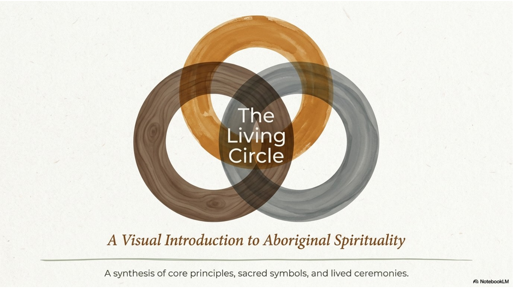
The image of the living circle is a helpful starting point because many Indigenous worldviews emphasize connection rather than separation. Spiritual life is not treated as only a private belief or a single weekly activity. It is lived through relationships with land, ancestors, living things, family, community, ceremony, and future generations.
The course source uses the term Aboriginal spirituality. This module also uses Indigenous spirituality as a broad term. In Canada, these terms can refer broadly to First Nations, Inuit, and Métis peoples, but students should remember that each nation and community has its own languages, histories, sacred stories, and practices.
The word circle points to wholeness, continuity, balance, and belonging. A circle has no hard beginning or ending, which makes it a strong symbol for cycles of seasons, life stages, teaching, memory, and renewal.
A respectful study of this topic does not try to turn Indigenous spiritualities into one universal system. It asks how specific communities understand the sacred, how teachings are passed on, and how responsibilities are lived in everyday life.
2. Re-framing the Spiritual Paradigm
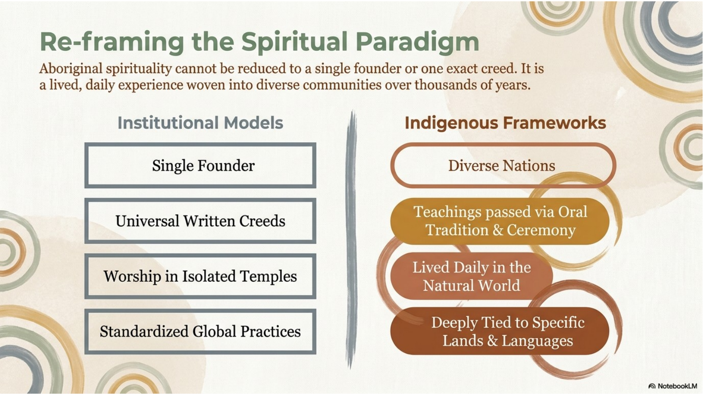
Many students first learn about religion through institutional models: a single founder, a written creed, worship in a clearly separated sacred building, and a set of standardized practices. Those patterns can be useful when studying some traditions, but they do not fit Indigenous spiritualities very well.
Indigenous spiritual frameworks are often rooted in diverse nations, oral tradition, ceremony, daily life, specific lands, and specific languages. Instead of one global religious structure, there are many community-based ways of knowing and practising.
This means spirituality is often woven into ordinary life. Hunting, gathering, parenting, naming, storytelling, caring for land, honoring ancestors, and joining community ceremonies can all carry spiritual meaning. Belief and practice are not always separated from culture, ethics, identity, and land.
Because Indigenous traditions are diverse, general statements must be used carefully. A respectful explanation should identify the nation or community whenever possible and avoid implying that all Indigenous peoples share the same ceremonies or teachings.
3. The Core Web of Interconnection
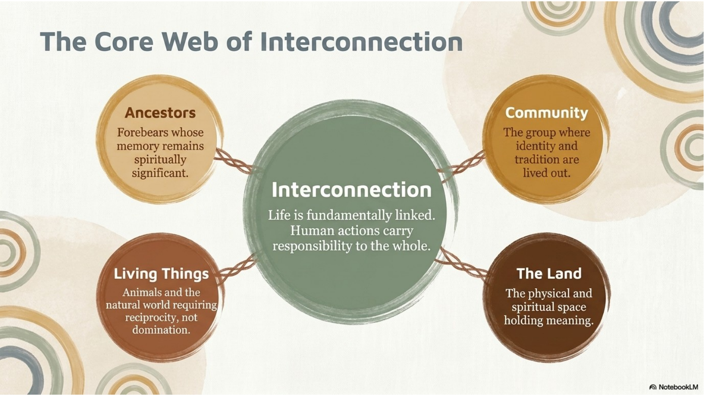
Interconnection is one of the most important ideas in this chapter. It means that human beings are not isolated individuals standing apart from the world. People are connected to ancestors, family, community, land, animals, plants, waters, ceremonies, and future generations.
Ancestors are spiritually significant because their memory, teachings, and sacrifices continue to shape the present. Community is where identity and tradition are lived out. Land is both physical and spiritual space. Living things are not simply resources; they are part of a wider relationship that calls for gratitude and care.
This worldview often emphasizes reciprocity. Reciprocity means that relationships involve mutual responsibility. If people receive food, shelter, medicine, teachings, or support from the natural world and from community, they also have duties to give back, show respect, and avoid domination.
Interconnection also shapes ethics. Choices are not judged only by what benefits one person. Students should ask how an action affects the whole web of relationships: people, land, animals, spiritual responsibilities, and those who will come after.
4. More Than Physical Space
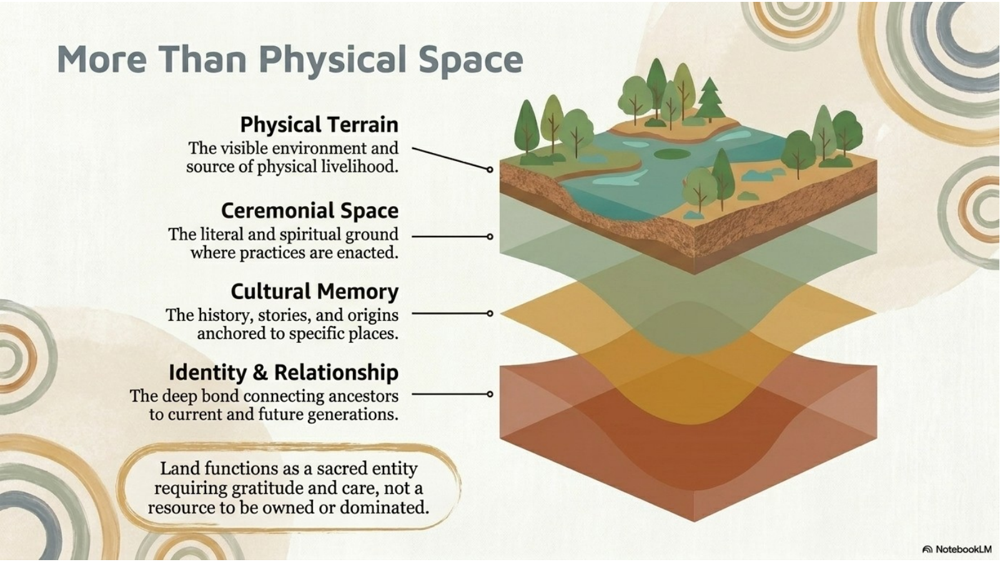
Land provides physical livelihood through the visible environment: water, food, plants, animals, shelter, and travel routes. However, the chapter emphasizes that land is much more than physical space or property.
Land can be ceremonial space because spiritual practices may be tied to particular places. A place may hold sacred meaning because ceremonies, teachings, or relationships have taken place there over generations.
Land is also cultural memory. Stories, origins, names, burials, migrations, seasonal practices, and community histories are anchored to specific places. To know the land is also to know part of the community’s identity.
For this reason, land is often understood as a sacred relationship requiring gratitude and care. Treating land only as a resource to own, exploit, or dominate misunderstands the depth of spiritual connection many Indigenous communities have with place.
5. Keepers of Wisdom: The Transmission Loop
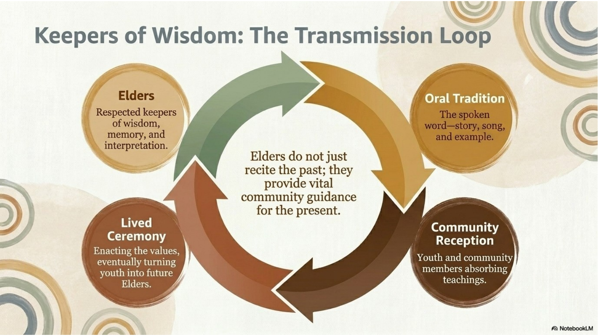
Elders are respected keepers of wisdom, memory, experience, and interpretation. The role of an Elder is not simply based on age. It is connected to recognized knowledge, service, character, and the trust of the community.
Oral tradition includes spoken teaching, story, song, example, ceremony, and careful listening. It is not “less than” written text. In many Indigenous communities, oral tradition is a powerful way to preserve history, law, values, and spiritual understanding.
The transmission loop shows how teachings move across generations. Elders share memory and guidance, ceremonies embody teachings, youth and community members receive and practise them, and those learners may eventually become future teachers.
Elders do not only repeat the past. They help communities interpret inherited teachings for present needs. In this way, oral tradition keeps memory alive while still allowing communities to respond to changing circumstances.
6. The Purpose of Creation Stories
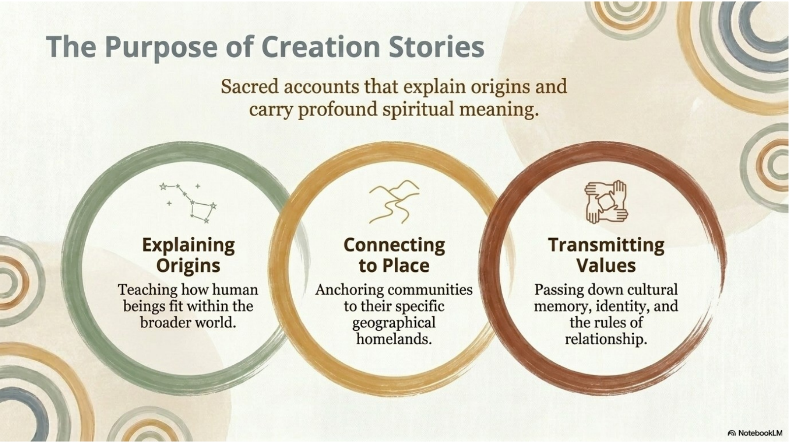
Creation stories are not just entertainment. They are sacred accounts that carry spiritual meaning, cultural memory, and teachings about how human beings fit within the broader world.
One purpose of creation stories is explaining origins. They can describe how the world, people, animals, plants, landforms, or relationships came to be. These accounts help a community understand its place in creation.
A second purpose is connecting people to place. Creation stories may anchor a community to a specific homeland, landscape, waterway, animal, or sacred site. The story teaches that identity is connected to place and relationship.
A third purpose is transmitting values. Creation stories may teach respect, humility, courage, generosity, balance, reciprocity, and proper relationship. They pass down cultural memory and ethical responsibility across generations.
7. Wampum: Weaving Memory and Agreement
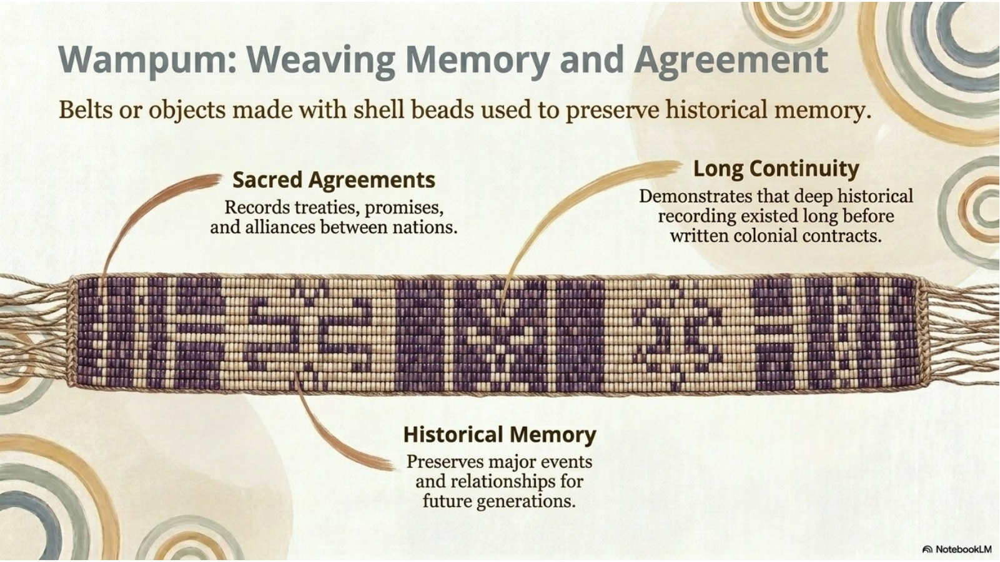
Wampum refers to belts or objects made with shell beads. In many Indigenous and treaty contexts, wampum has been used to record and remember important agreements, promises, alliances, and relationships between nations.
Wampum is not simply decoration. Its patterns, colors, and forms can carry meaning that must be interpreted within the correct community context. A belt may function as a memory aid, a sacred record, or a symbol of relationship.
The use of wampum shows that history does not have to be preserved only through printed books or government documents. Memory can be carried through objects, oral explanation, ceremony, and shared responsibility.
When studying wampum, students should avoid treating it as a generic artifact. It is better to ask which community, treaty, agreement, or teaching is connected to it and who has authority to interpret its meaning.
8. The Geometry of Continuity
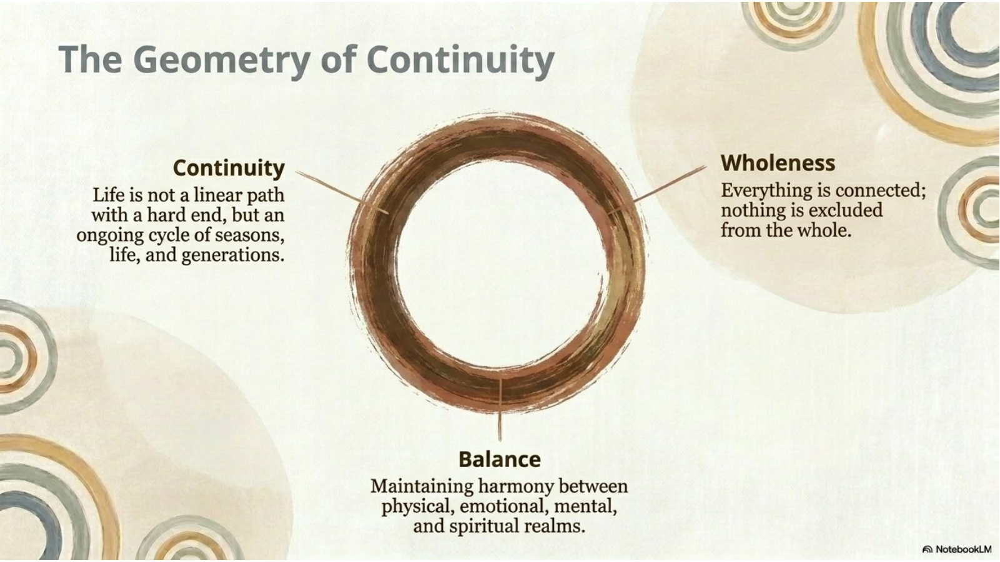
The circle is a powerful symbol because it shows life as an ongoing cycle rather than a straight line with a hard end. Seasons return, generations follow one another, and teachings continue through memory and practice.
Continuity means that the past, present, and future are related. Ancestors, current community members, and future generations are part of one living pattern of responsibility.
Wholeness means that nothing is excluded from the whole. People are not separated from land, animals, community, spirit, emotion, or memory. Each part affects the others.
Balance means maintaining harmony among different parts of life. The visual identifies physical, emotional, mental, and spiritual realms. A healthy life seeks balance among these dimensions rather than allowing one to dominate the rest.
9. The Medicine Wheel Framework
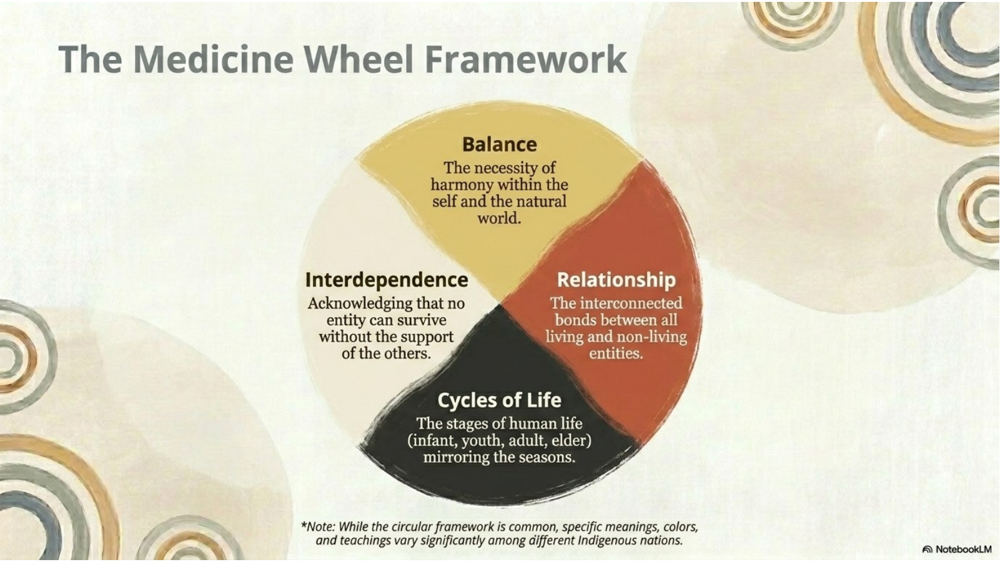
The medicine wheel is one important circular teaching framework. It is often used to help explain relationships among different parts of life, but students must remember that specific meanings, colors, directions, and teachings vary significantly among Indigenous nations.
Balance points to the need for harmony within the self and the natural world. A person’s well-being is connected to physical, mental, emotional, spiritual, social, and environmental relationships.
Relationship and interdependence show that no entity exists alone. People depend on other people, animals, plants, waters, land, ancestors, and spiritual teachings. To live well is to recognize those bonds and act responsibly within them.
The medicine wheel may also represent cycles of life, such as infant, youth, adult, and elder, or cycles of seasons. These patterns remind students that change is part of life and that each stage has responsibilities and gifts.
10. Architecture of Ceremony
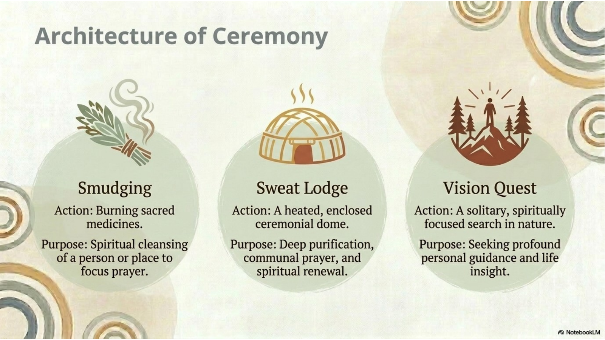
Ceremonies are structured spiritual actions that express belief and responsibility. They are not performances for entertainment. They are meaningful practices connected to community teachings, sacred medicines, prayer, and relationship.
Smudging generally involves burning sacred medicines to cleanse a person or place and focus prayer. The medicines used and the proper protocols can vary by community, so students should avoid assuming one universal method.
A sweat lodge is a heated, enclosed ceremonial space associated with purification, communal prayer, and spiritual renewal in communities where this ceremony is practised. It should be approached with respect, proper guidance, and community protocol.
A vision quest is a spiritually focused search, often associated with solitude, nature, guidance, and life insight in specific traditions. It is not simply camping or personal adventure; it is a sacred practice with cultural rules and responsibilities.
11. Strengthening Identity Through Gathering
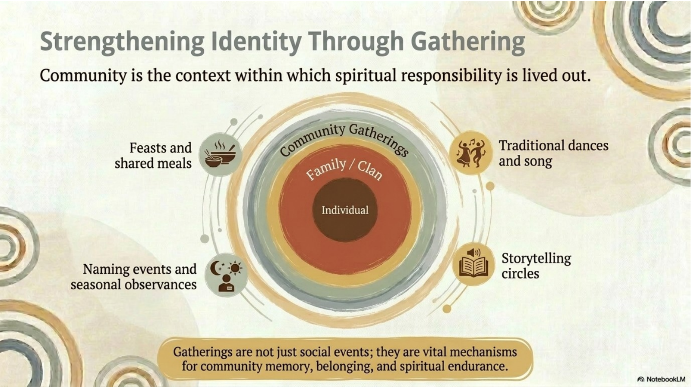
Community is the context in which spiritual responsibility is lived out. The individual is important, but identity is often shaped through family, clan, community, and shared responsibilities.
Gatherings such as feasts, shared meals, naming events, seasonal observances, traditional dances, songs, and storytelling circles help people remember who they are and where they belong.
These gatherings are not only social events. They carry teachings, language, humour, grief, gratitude, celebration, and memory. They connect younger people with elders, relatives, stories, and practices.
Gathering also supports spiritual endurance. When communities come together after hardship, they renew relationships and keep cultural identity strong across generations.
12. The Impact of Colonization
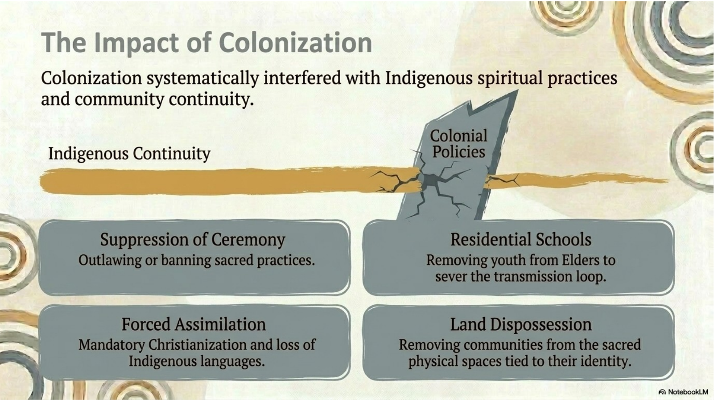
Colonization refers to the process by which outside powers imposed control over Indigenous lands, peoples, governments, cultures, and spiritual lives. In this chapter, colonization is shown as a force that cracked the continuity of Indigenous community life.
One impact was the suppression of ceremony. Sacred practices were outlawed, banned, or discouraged by colonial laws and social pressure. This targeted the spiritual actions that helped communities maintain identity and relationship.
Residential schools removed many children from their families and communities. This harmed the transmission loop by separating youth from Elders, languages, ceremonies, stories, and land-based teaching.
Forced assimilation, mandatory Christianization, language loss, and land dispossession also weakened community continuity. Removing people from sacred physical spaces harmed not only property rights but also identity, memory, ceremony, and relationship with place.
13. The Unbroken Web
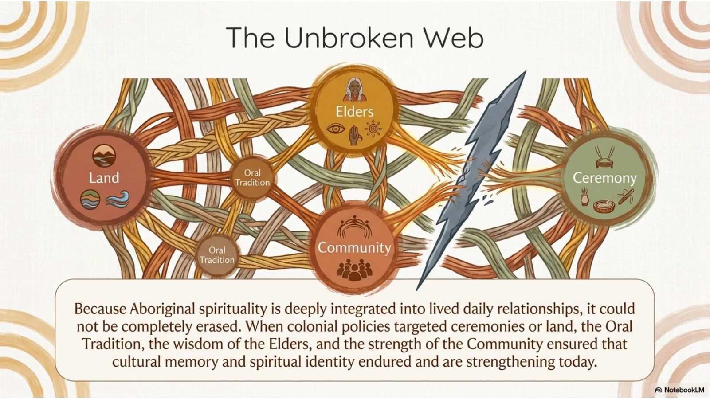
Colonial policies caused deep harm, but the chapter also emphasizes endurance. Indigenous spiritual life could not be completely erased because it was woven through land, oral tradition, Elders, community, and ceremony.
When ceremonies were targeted, teachings could still survive through memory, stories, family relationships, songs, language, and quiet practice. When land was taken, the relationship to land remained spiritually and culturally significant.
The unbroken web does not mean colonization was harmless. It means that Indigenous communities continued to preserve, protect, adapt, and revitalize spiritual identity despite pressure and loss.
Today, many communities are strengthening language, ceremony, land-based education, cultural memory, and public recognition. The survival of the web shows the strength of community and the importance of respecting Indigenous self-determination.
14. The Myth of the Monolith
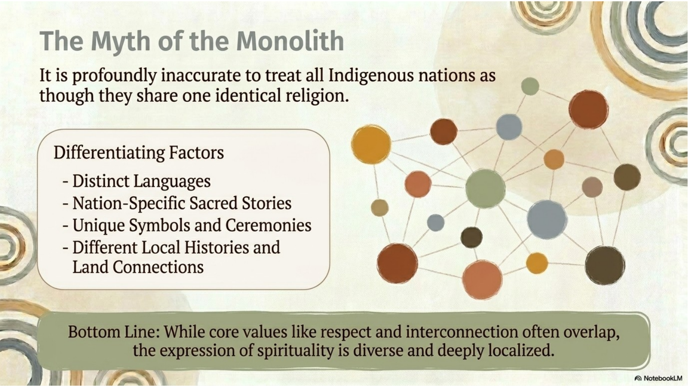
A monolith is something treated as one single, uniform thing. The “myth of the monolith” means the false idea that all Indigenous peoples share one identical religion or one set of ceremonies.
Indigenous nations have distinct languages, nation-specific sacred stories, unique symbols and ceremonies, different local histories, and different land connections. These differences matter because spirituality is often deeply tied to place and community memory.
There can be overlapping values, such as respect, interconnection, gratitude, responsibility, and balance. However, shared values do not erase diversity. The expression of spirituality is diverse and deeply localized.
A respectful student should therefore avoid pan-Indigenous claims. Instead of saying “all Indigenous people believe,” use careful language such as “many Indigenous worldviews emphasize,” “in this community,” or “according to this nation-specific source.”
15. Guidelines for Respectful Study
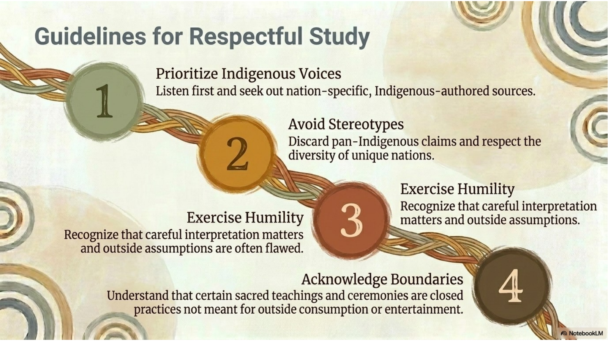
First, prioritize Indigenous voices. Whenever possible, learn from nation-specific, Indigenous-authored, community-grounded sources. A textbook can introduce the topic, but it should not replace Indigenous perspectives.
Second, avoid stereotypes. Do not assume all nations are the same, do not treat ceremonies as entertainment, and do not reduce Indigenous spirituality to a few symbols. Respect the diversity of unique nations and communities.
Third, exercise humility. Outsiders can misunderstand when they interpret sacred stories, symbols, or ceremonies through their own assumptions. Careful interpretation requires listening, patience, and willingness to correct mistakes.
Fourth, acknowledge boundaries. Some sacred teachings and ceremonies are closed practices not meant for public display, outside consumption, or school projects. Respectful learning does not demand access to everything.
16. Researching and Interpreting Indigenous Materials Respectfully
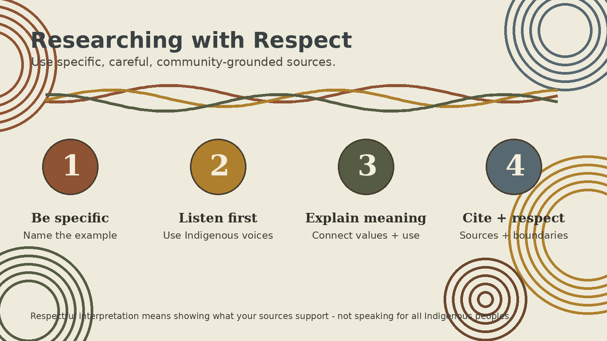
Research tasks in this chapter may ask you to examine one Indigenous teaching, sacred symbol, ceremonial object, creation story, artwork, song, or public monument. The goal is not to collect random facts. The goal is to show accurate, respectful understanding of a specific example and explain how it connects to land, identity, memory, community, values, or spiritual responsibility.
A strong response begins with specificity. Identify the teaching, symbol, object, story, artwork, nation, community, or source as clearly as possible. Avoid statements such as "all Indigenous people believe." Use careful language such as "according to this nation-specific source," "in this community," or "many Indigenous worldviews emphasize."
Use reliable and respectful sources. Strong sources include Indigenous nation or community websites, Indigenous-authored books, articles, interviews, videos, cultural-centre materials, museums with community involvement, and reputable educational sources that identify where their information comes from. Weak sources include random images without context, uncited blogs, tourism pages that sell spirituality, social media posts without attribution, and generic summaries that do not identify a nation or community.
When explaining a teaching, symbol, or object, describe both meaning and use. What is it? How is it used or represented? What values or beliefs does it communicate? What boundaries, protocols, or cautions matter? Some sacred teachings and ceremonies are closed practices, which means they are not meant for public display, outside imitation, or school-project consumption.
When analyzing a creation story, artwork, song, or monument, identify the main spiritual ideas shown in the work and connect them to larger chapter concepts such as land, identity, memory, community, ancestors, respect, interconnection, balance, or continuity. Careful interpretation means explaining what your source supports rather than inventing meanings or speaking for all Indigenous peoples.
A bibliography is part of respectful study because it shows where your information came from. For each source, include the author or organization, title, website or publisher, date if available, URL if online, and the date you accessed it if your teacher requires access dates. Using at least two credible sources helps protect you from repeating stereotypes or unsupported claims.
Many Indigenous spiritualities are lived daily through ethical relationships, gratitude, reciprocity, and harmony with creation. Stories, symbols, ceremonies, artwork, songs, and objects can all communicate belief, but they should be interpreted through the correct community context and with humility.
To treat something with reverence means to approach it with respect, care, and awareness that it may carry spiritual meaning. Land used for ceremony, sacred medicines, wampum, creation stories, and ceremonial practices should not be treated as random objects, entertainment, or content to copy.
Chapter 2 Key Vocabulary
These terms are important for understanding the module. Students should be able to define each term in their own words and use it accurately in context.
| Term | Meaning |
|---|---|
| Aboriginal/Indigenous spirituality | A broad course term for diverse spiritual worldviews and practices connected to Indigenous peoples; it should not be treated as one single religion. |
| Ancestor | A forebear whose memory, teachings, and presence may remain spiritually and culturally significant. |
| Balance | Harmony among parts of life, including physical, emotional, mental, spiritual, social, and natural relationships. |
| Ceremony | A structured spiritual action that expresses belief, prayer, relationship, identity, and responsibility. |
| Circle | A symbol often used to express wholeness, continuity, cycles, balance, and relationship. |
| Colonization | The imposition of outside control over Indigenous lands, peoples, institutions, cultures, and spiritual practices. |
| Community | The social and spiritual setting where identity, memory, responsibility, and tradition are lived out. |
| Creation story | A sacred account that explains origins and carries spiritual meaning, identity, values, and connection to place. |
| Cultural memory | Shared memory preserved through stories, land, ceremony, language, symbols, objects, and community practice. |
| Elder | A respected keeper of wisdom, memory, interpretation, and community guidance. |
| Interconnection | The idea that life is linked and that relationships among people, land, ancestors, living things, and spirit matter deeply. |
| Land | More than physical space; a source of livelihood, sacred meaning, cultural memory, identity, and relationship. |
| Medicine wheel | A circular teaching framework that can express balance, relationship, interdependence, and cycles of life, with meanings that vary by nation. |
| Oral tradition | The passing on of teachings through spoken word, story, song, example, ceremony, and lived practice. |
| Reciprocity | A relationship of mutual responsibility, gratitude, giving back, and care. |
| Residential schools | Colonial institutions that removed many Indigenous children from families and communities, disrupting language, culture, and spiritual teaching. |
| Smudging | A spiritual cleansing practice often involving sacred medicines, prayer, and preparation, with protocols varying by community. |
| Sweat lodge | A heated ceremonial space associated with purification, communal prayer, and spiritual renewal in traditions where it is practised. |
| Vision quest | A spiritually focused search for guidance and insight in specific traditions, often connected to solitude, nature, and protocol. |
| Wampum | Shell-bead belts or objects used in some contexts to preserve memory, agreements, treaties, promises, and relationships. |
| Bibliography | A list of the sources used in an assignment, usually including author or organization, title, publisher or website, date, URL when online, and access date if required. |
| Closed teaching | A sacred or community-specific teaching or ceremony that is not meant for public display, outside imitation, or unrestricted study. |
| Pan-Indigenous claim | An overgeneralized statement that treats all Indigenous peoples as though they share one identical belief, symbol, ceremony, or history. |
| Reliable source | A source that is credible, traceable, and context-aware; for this chapter, strong sources are often Indigenous-authored, nation-specific, or community-grounded. |
| Respect | An attitude of care, humility, gratitude, and responsibility toward people, ancestors, land, living things, stories, symbols, and ceremonies. |
| Reverence | Deep respect shown toward something understood as sacred or spiritually meaningful. |
| Source context | Information about where a teaching, symbol, story, or interpretation comes from, including the nation, community, author, organization, or knowledge holder when available. |